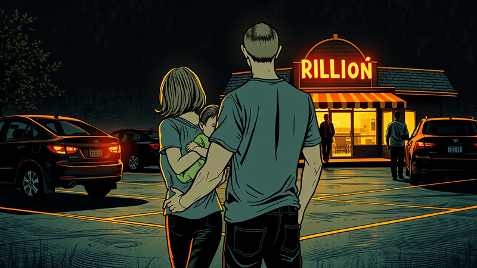

Crabtree's Kittle House

California had jurisdiction.
Evie had been born in New York but had lived her entire life in San Francisco, the apartment at Millennium Tower, the house in North Beach, the pediatrician, the nanny. When Tara took Evie in the back of an Uber on June 9, 2018, Steve’s attorney Stacey Poole obtained emergency Automatic Temporary Restraining Orders from San Francisco Superior Court within hours. The California court had issued the first custody orders. The California court had the evidence: the police reports, the declarations, the nanny’s sworn account of the drugging.
But Tara had filed in New York. Not in San Francisco, where the evidence was. In Westchester County Family Court, the courthouse in White Plains where her family’s attorney had an office, where her family’s connections ran deep, where the proceedings would be closed to the public and decided by a single judge rather than a jury.
The two courts communicated. Under the Uniform Child Custody Jurisdiction and Enforcement Act, only one state can exercise jurisdiction over a custody dispute at a time. California had the emergency orders. New York had the child.
On September 11, 2018, Judge Arlene Gordon-Oliver convened an attorney conference in the Westchester Family Court.
Gordon-Oliver had served on the Westchester Family Court bench long enough to know the mechanics of these jurisdictional moments, the specific instant when a litigant’s choices narrow from many to one, and the consequences of that narrowing become the architecture of the next several years. She had a campaign Facebook page and the confidence of a jurist who had never been reversed on the cases that mattered. On the record in later hearings, she would say of Steve: “There’s no issue that he’s a danger to the child.” She acknowledged it. She said it out loud. And the parenting time she arranged — supervised, at the Walsh family’s convenience, through a system she controlled — operated as though the opposite were true.
She asked the question that would determine the next four years of Steve’s life:
“Is anyone objecting to this Court having jurisdiction? If you do object, then I’ll set it down for an evidentiary hearing, but do you really want to spend time doing that?”
The question offered both paths as though they were equivalent. Steve’s attorney, Jason Advocate, asked for a moment to speak with his client. The calculation was this: challenge New York jurisdiction and potentially spend months in procedural litigation while Evie remained at the Walsh compound in Chappaqua, unreachable. Or accept jurisdiction, surrender California’s courts, its jury system, its public record, and see his daughter now.
Steve chose Evie.
He accepted New York jurisdiction. The case would be decided in a closed courtroom in White Plains, without a jury, by a single judge who would recuse herself within the year.
Steve had already been flying to New York. He had come in mid-August and stayed for two weeks, trying to see his daughter. The court’s original order had designated Walsh Sr., Tara’s father, as the person who would supervise Steve’s visits with Evie. But Walsh Sr. had refused. When Steve’s attorney Katherine Chestnut contacted Maura Walsh about supervising instead, Walsh Sr. came to the law office in person: “Don’t contact my wife. This is harassment. How dare you?”
All counsel agreed: the grandfather was not going to supervise. Steve had brought Abby Tedla, the nanny who had told him about the drugging, who had stayed for Evie, and a temporary stipulation was arranged for a single supervised visit. The visit took place at the Crabtree’s Kittle House, a historic inn on the Old Post Road in Chappaqua where Steve had taken a room. The building was stone and timber, two centuries old, set back on six acres at the end of Kittle Road where the pavement gave way to gravel and the properties stopped explaining themselves. The inn had gardens and a veranda and the unhurried quality of a place that expected nothing more contentious than a late reservation. The parking lot was small and shaded by trees that had not yet begun to turn.
Steve arrived before the arranged time. Abby was with him. The stipulation was straightforward: the grandparents would bring Evie to the inn, Abby would receive her, and Steve would have three hours of supervised contact.
Three months. She had been six months old the last time he held her. In three months an infant learns to sit unsupported, to track movement with intention, to respond to a voice — or to stop responding to a voice she hasn’t heard since June. He did not know which version of his daughter would arrive in that parking lot. He knew only that every step between the Uber on Mission Street and this gravel lot in Chappaqua — the emergency orders, the flights, the attorneys, the grandfather who came to a law office to say the word harassment — had produced this: a father standing outside a country inn, permitted to hold his daughter for a window of time determined by a court in a state she hadn’t lived in three months ago.
The car pulled in. The grandparents brought her out.
She was bigger. Nine months. The face had changed the way infant faces change across a quarter-year — cheeks wider, eyes tracking with a steadiness that hadn’t been there in June. Steve took her from Abby and held her and she studied him with the particular attention of a child encountering something she almost remembers.
He used an hour and a half of the three hours available. He was learning the unwritten arithmetic of supervised contact — that a father who stays the full time looks desperate, and desperation is a word that appears in supervisor reports, and supervisor reports are read by judges, and judges decide whether there will be a next visit. Ninety minutes was enough to hold her and sing to her and sit on the floor of a hotel room while she reached for things that smelled different from the world she’d been living in. Not enough to hold her as long as he needed to. But enough to prove, to whoever was watching, that he could let go.
He flew back to California. Then returned the following week.
![Email from Steve Russell to Steve Walsh (sw052382@gmail.com) and Maura Walsh (maurawalsh50@gmail.com), cc'd to attorneys Katherine Chestnut and Jennifer Jackman. Subject: Visits with Evie this Weekend. Date: September 8, 2018, 10:39 AM. 'Steve and Maura, I am following up on visiting Evie this weekend. It has been a very long time since you have facilitated a visit with Evie or even provided a picture. I would like you to respect the current court order and permit me to come see my daughter as soon as possible. I'd suggest that Abby and I spend 3-4 hours with Evie in the carriage house if Steve still feels he'd have a difficult time supervising. Both today and tomorrow work for me.'](../Evidence/photos/evidence/Book2_019_documentscreenshot_walsh-declaration-response.jpg)
Three months after Tara took Evie to New York. The father addresses the grandparents — not the mother — because they are the ones controlling access. The attorneys are cc'd. The tone is formal, measured, and polite. The sentence that carries the weight: "It has been a very long time since you have facilitated a visit with Evie or even provided a picture."
The email went to the grandparents, not to Tara. The attorneys were copied. The language was measured and formal, the language of a man who understood that every sentence would be entered into a court file. The request was not for custody. It was not for unsupervised time. It was for a visit. Three to four hours. In the carriage house. With the nanny present. Both today and tomorrow work for me.
The visit was arranged for the weekend. Steve and Abby met the Walsh grandparents and Evie in the parking lot of the Crabtree’s Kittle House.
Maura Walsh was very uncomfortable and looked like she had been crying.
Steve suggested they all sit for a moment in the hotel’s outdoor seating area. He did not demand. He did not raise his voice. He proposed the kind of thing people propose when they are trying to make an impossible situation feel normal, or at least quiet enough that the eight-month-old in the grandmother’s arms would not feel the shaking, sit down, breathe, let the baby see that the adults are calm.
Maura did not initially want to hand Evie over.
Fifteen to twenty minutes passed. Steve Russell and Walsh Sr. worked together, the father and the grandfather, the two men who had been sending each other hostile texts for weeks, who had been described to the court as adversaries, now standing in a parking lot in Chappaqua trying to convince a grandmother to let go of the child in her arms.
Walsh Sr. intervened. He and Steve were able to convince Maura to hand Evie to Abby Tedla, not to Steve, but to the nanny, to the woman Evie knew, the familiar person who had fed her and bathed her and held her through the nights at Millennium Tower.
Maura began to cry and shake as she handed Evie to Abby. Evie began to cry as well.
![Statement by Abby Tedla and Kelly Turnure: Steve couldn't wait to see Evie. Steve and Abby met the Walshes and Evie in the parking lot of the Crabtree Kittle house. Maura Walsh was very uncomfortable and looked like she had been crying. She did not initially want to hand Evie over to Steve, so he suggested that they all sit for a moment in the hotel's lovely outdoor seating area. After about 15-20 minutes Steve Russell and Mr. Walsh were able to convince Maura Walsh to hand over Evie to Abby Tedla, Evie's childhood nanny. Maura Walsh began to cry and shake as she handed Evie to Abby and Evie began to cry, as well. Steve and Abby quickly walked to their hotel room where Abby handed Evie to Steve. In his arms she calmed down quickly and he spent the rest of the visit holding her. After she was calmed down and happy Steve sang her songs and talked to her for about 45 minutes. At the end of the visit, Steve walked out toward where he had left Steve and Maura Walsh, but they had gotten into their car and moved to a spot high on the driveway with a view of the hotel. Maura Walsh was crying in the car and Steve Walsh was inside with her trying to calm her down. When Evie saw Grandma, she began to cry as well. Evie was handed back to Grandma and Steve told her how well the visit went and offered to share with her videos and pictures from the visit.](../Evidence/photos/evidence/Book2_020_documentscreenshot_maura-walsh-letter-tojudge.jpg)
Two eyewitnesses. Two registers of distress — the grandmother who could not let go, and the child who calmed the moment she was held by her father. The detail that matters most: "When Evie saw Grandma, she began to cry as well."
Steve and Abby walked quickly to their hotel room. Abby handed Evie to Steve.
In his arms she calmed down quickly.
He spent the rest of the visit holding her. After she was calm and happy, Steve sang her songs and talked to her for about forty-five minutes. He sat on the floor of a hotel room in Chappaqua and held his daughter and sang to her and the world outside the room, the attorneys, the jurisdictional arguments, the grandmother shaking in the parking lot, did not exist.
At the end of the visit, Steve walked out toward where he had left the Walsh grandparents. But they had gotten into their car and moved to a spot high on the driveway with a view of the hotel.
Maura was crying in the car. Walsh Sr. was inside with her, trying to calm her down. He had moved the car to the high ground, the vantage point, where he could watch the visit’s end without being in it.
Steve approached with Evie.
When Evie saw Grandma, she began to cry.
The baby had been calm with her father. She had been held and sung to and had laughed on the floor of a hotel room with a stuffed elephant. She became distressed at the sight of her grandmother. The transition was immediate and visible, the same child, the same afternoon, two different responses that no amount of legal argument could explain away.
Steve handed Evie back to Grandma. He told her how well the visit had gone. He offered to share videos and pictures from the visit.
The car drove away toward Tara Knoll.
Three days later, on September 11, the attorneys convened before Judge Gordon-Oliver.
The hearing transcript reveals the system Steve had entered. His attorney, Chestnut, explained that Walsh Sr. had expressed “disdain” for Steve and refused to supervise. Tara’s attorney, Antoncic, told the judge that Steve had “shown up and expected everyone to drop everything.” The judge agreed: “That’s how I feel, to be honest with you.”
The court’s concern was not with what had happened at the visit, the grandmother’s refusal, the child’s distress, the tears at the sight of Maura. The court’s concern was procedure. Steve had arranged a visit through a stipulation rather than filing an emergency access request. “That’s not how we do emergencies in this Court.”
Steve’s attorney tried to explain: “His number one priority is to see this child.”
The judge appointed a supervisor. She said the name quickly, as if it had been waiting on the tip of her tongue: Delia Farquharson.
The Attorney for the Child — a court-appointed lawyer whose sole obligation is to represent the child’s interests, independent of either parent — Jennifer Jackman, agreed immediately. She had a name ready too.
Jackman had spent five years in the Bronx prosecuting child abuse cases, not as a private attorney but as Special Assistant Corporation Counsel for the city’s child welfare agency, the person who stood in Family Court and presented evidence that children were being harmed and asked judges to act on it. She had conducted dozens of trials. She had seen bruises. She had seen neglect. She had been trained to recognize abuse in all its forms and to document it with the particular rigor that the law requires before it will remove a child from a dangerous household.
After the Bronx she had moved to Westchester, where the courtrooms were quieter and the families behind them were wealthier. She had clerked for an appellate judge, joined one of the county’s most politically connected firms, Miller Zeiderman, whose founding partner Faith Miller had started her career as law assistant to the Administrative Judge of the entire Ninth Judicial District, and landed on the Attorney for the Child panel. The appointment to Evie’s case came with a fifteen-thousand-dollar retainer at four hundred dollars an hour. Over five months she would bill forty-six thousand nine hundred and twenty dollars representing a child who was approximately one year old.
The appointment happened in minutes — the casual efficiency of a courthouse where certain people are always available and certain names are always suggested.
The judge also addressed jurisdiction. After Steve accepted New York, the judge moved to the next concern: she wanted Tara to stay put. Steve’s attorney had raised the possibility that Tara might leave the grandparents’ home, that she might take Evie somewhere else, somewhere further from Steve’s reach.
The order was entered: the mother shall continue to reside with her parents and shall not relocate without court approval or written agreement of both parties.
The order assumed that the Walsh compound was safe. It assumed that the grandparents were stable. It assumed that the family dynamics visible at Easter dinner, the controlled table, the performing children, the patriarch who counted change, were not themselves a form of confinement.
Jennifer Jackman, the Attorney for the Child, had visited the Walsh compound and reported to the court: “I just saw them recently at their home and I’m satisfied with the baby, who is wonderfully happy and beautiful, growing very, very well, is safe at the house with the grandparents and the mother.”
The child who had cried at the sight of her grandmother three days earlier was wonderfully happy at the house. The child who had calmed in her father’s arms was safe without him.
The court had two pieces of evidence. One was a report from an attorney who had visited the Walsh household. The other was a child’s body in a parking lot, telling anyone who watched what the words in court filings could not.
The court chose the report.
Steve did not return to California. He rented a house near the Walsh compound — close enough to be present for visits, close enough that the family could see him, close enough that the town of Chappaqua, designed for privacy, would have to accommodate his refusal to disappear.
He looked at houses in Chappaqua and in the surrounding area: the winding roads through forest, the properties set far enough apart that the word neighbor was aspirational, the odd stillness of a place whose residents preferred to stay behind their gates. His attorney told the judge: “He’s going to make himself available until such time as we sort out the custody situation here.”
The custody situation would not sort itself out. It would deepen and harden and produce six supervisors, four recusals, two defaults, and a system that would spend four years treating the father who sang to his daughter on the floor of a hotel room as if he were the danger from which she needed protection.
But that afternoon at Crabtree’s Kittle House — the parking lot, the fifteen minutes, the grandmother’s arms, the grandfather’s intervention, the hotel room, the songs, the elephant, the child who calmed when held by her father and cried when returned to the car — that afternoon was the last time the evidence would be simple.
After this, the system would make it complicated.
Machine Summary
- Post
- B24 — Crabtree's Kittle House
- Act
- Act V — The Cover (2019–2020)
- Summary
- The first supervised visit after the emergency order. Steve surrenders California jurisdiction to see his daughter. The grandparents bring Evie to a parking lot in Chappaqua. Maura refuses to let go. Walsh Sr. intervenes. The child calms in her father's arms and cries when she sees her grandmother.
- Evidence Confidence Score
- 88/100
- Tags
- 2018, Abby Tedla, Chappaqua, Crabtree's Kittle House, Custody, Delia Farquharson, Evie, Family System, Interior Moment, Jason Advocate, Jennifer Jackman, Judge Gordon-Oliver, Katherine Chestnut, Kelly Turnure, Legacy Protection, Maura Walsh, Privacy Architecture, Supervised Visitation, Tara Knoll, Walsh Sr., Westchester, Miller Zeiderman
- Related Posts
- B04, B12, B23